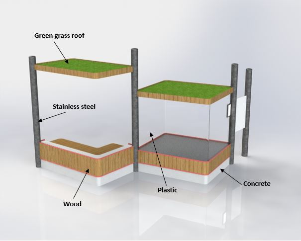

Home
Home
This tool was used for designing the hubs. While designing the hubs we had to keep in mind what will happen to them when they reach their end of life. First of all we want to extend the life of our hubs. The hubs, just like other street furniture, should be able to be used for multiple years. One town could maybe only want to use it for a few years so afterwards the hub should be able to be transported to another town. The hubs have a neutral design so they can fit most towns. The parts are also modular, each display cabinet and bench can be disconnected, so if one display cabinet gets damaged or has to be replaced, the rest of the hub can stay.
Materials used in the hubs
Still our hubs will reach an end at a moment. To make sure the hubs can follow the cycle of circular economy we looked into the materials from which they would be made. All materials should be able to withstand the outdoor circumstances for a number of years. Also the different materials should be easily separated for the possibility of recycling. For street furniture, the most popular materials used are steel and wood; other possibilities are stone, concrete, recycled plastic and various other materials (1). The bases should be made of a heavy and strong material that will keep the hub in place. Concrete is the most suitable material here for. A way to make our footprint lower is to use already recycled materials. Recycled concrete indeed exists (2). It has already been used in the Netherlands. They used concrete parts of old buildings and grinded them so they can be added when creating new concrete (3). Recycled concrete has a bit lower quality than the original one, but for our purpose of street furniture it can be used. The poles between the different modules will be made of stainless steel. This is an expensive material but the best lasting one for outdoor furniture. The display cabinets will be closed off with see through plastic which can be recycled. The outside finish of the hubs will be made of wood, which can be recycled if we do not use toxic materials on it.
Still our hubs will reach an end at a moment.
2: https://www.enci.nl/nl/c2ca
3: https://www.duurzaamoss.nl/initiatieven/100-gerecycled-beton-duurzamer-wordt/